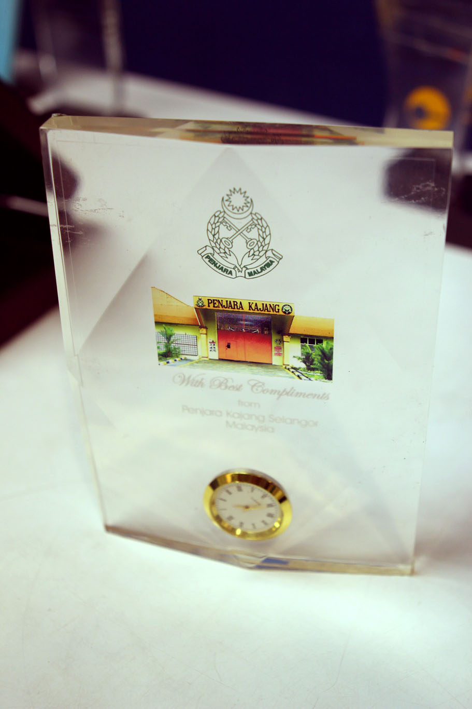

ACHIEVEMENT
OUTSTANDING PRIMARY LEARNING CENTRE AWARD 2015

The United Nations High Commissioner for Refugees (UNHCR) awarded SHELTER Community School 1 (SCS1) with the “Outstanding Primary Learning Centre” Award. SCS1 is one of the five schools for refugee children that is under SHELTER. Click Here for more
THE INAUGURAL 2004 ASIA PACIFIC NGO AWARDS

SHELTER was the Malaysian winner of the inaugural 2004 Asia Pacific NGO Awards. SHELTER has internal and external checks and balances to ensure that donations from the public do not go amiss.
ANUGERAH KHAS 2007

SHELTER was awarded with an ‘Anugerah Khas’ (Special Award) by the Prison Department of Malaysia in conjunction with their launching of National Level Prisons Day celebration at Prison College in Kajang on 4th November 2007.